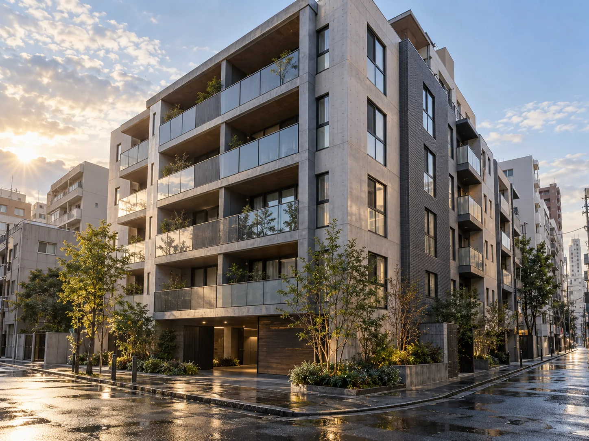
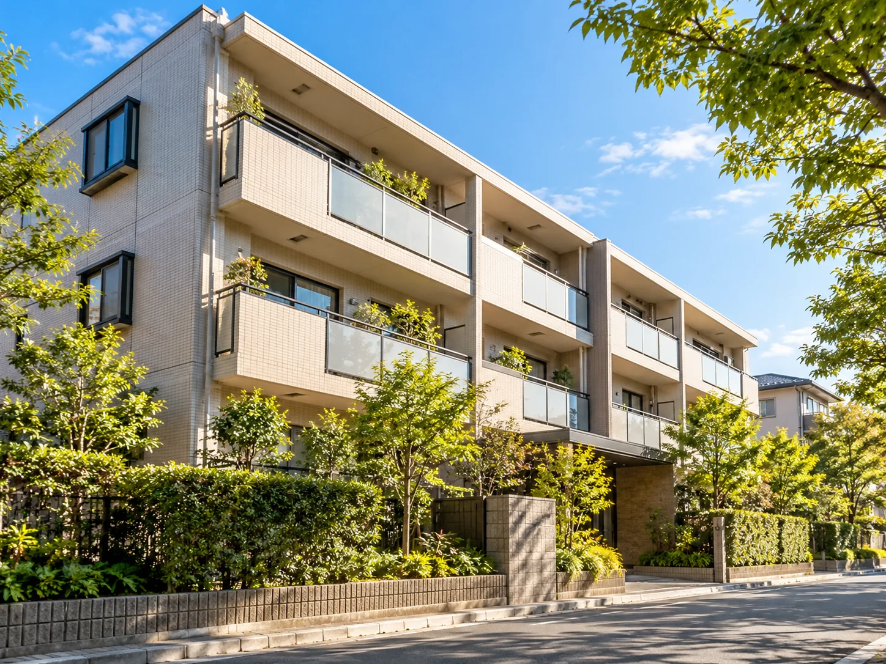

01
01 / 契約を見つめ直す
サブリース、このままでいい？
今の契約を知るところから、選択肢は始まります。
今の契約を知るところから、選択肢は始まります。
01 / OUR STANCE
サブリース改善室では、最初から「解約ありき」「売却ありき」で考えません。現在の契約・賃料・残債・物件状況を確認し、どの選択肢が合っているのかを整理します。
答えを急がず、
数字と選択肢を
テーブルに。
02 / YOUR CONCERNS
結論を急ぐ前に、契約と数字を並べてみましょう。
03 / IMPROVEMENT CASES
「売却を選んだケース」と
「売却せずに改善したケース」。
どちらも、比較から始まりました。

売却価格差+700万円
残債約2,200万円、解除違約金約48万円。サブリース付きの状態では残債を約600万円下回る査定でした。契約内容を確認し、解除後に2,300万円で売却した事例です。
※個別事例です。解除可否・違約金・査定・売却価格は物件、契約、市場環境等で異なります。売却には別途諸費用等がかかる場合があります。

年間収入の改善+9.6万円／年
入居者賃料が購入当時の約11万円から約12万円まで上昇していたため、売却や解除ではなく、オーナーの受取賃料を月8,000円改善した事例です。
※個別事例です。賃料改善の可否・金額は契約内容、物件、市場賃料等によって異なります。
※事例の写真は実際の物件ではなく、提案用の生成イメージです。
だから、まず「何をするか」より
「今どうなっているか」を確認します。
04 / WHY IT MATTERS
投資用不動産では、家賃収入と収益性が売却時の評価に影響します。サブリースによってオーナーの受取賃料と実際の入居者賃料に差がある場合、その条件が査定に影響することがあります。
賃料の流れを、まず見える形に。
※数字は添付原稿の説明例です。物件ごとの条件によって異なります。
05 / EXPERIENCE
同じサブリースでも、契約内容と交渉の進み方はさまざまです。過去の対応事例をもとに確認します。
30件以上の対応経験。解除に至った事例が複数あります。
20件以上の対応経験。当社確認事例では、解除が難しいケースが多くあります。
解除が難しいケースも、解除に至ったケースもあります。リブシステム・アセットリード・ライブズナビ等もご相談可能です。
※依頼者提供原稿に基づく表現です。対応経験と事例の根拠は公開前に運営者へ確認が必要です。すべての契約に当てはまるものではありません。
06 / LINE DIAGNOSIS
友だち追加後、3つの質問に答えるだけ。担当者が契約と物件の状況を確認し、次の選択肢を整理します。
今日
ご相談ありがとうございます。
まず、契約中のサブリース会社を教えてください。
〇〇会社です
ありがとうございます。
次に、対象の物件名を教えてください。
〇〇マンションです
今、一番気になっていることは何ですか？
07 / AFTER THE ADD
最初に聞くのは、サブリース会社・物件名・今のお悩みの3つ。その後、担当者が内容を確認して返信する流れを、15秒でご覧いただけます。
提案用の画面イメージ / 無音・自動再生なし / LINE未接続08 / THE PROCESS
最初から結論を決めず、契約と物件の状況をひとつずつ整理します。
ボタンから友だち追加
会社名・物件名・お悩みを確認
必要に応じて契約内容や数字を確認
希望する場合のみ次のお手続きへ
09 / FAQ
ご相談前によくいただく疑問をまとめました。
はい。売却や解約を決めていない段階でもご相談いただけます。まずは現状整理だけでも問題ありません。
いいえ。解除の可否は会社・契約内容・契約時期・物件状況等によって異なります。
保証はできません。現在の契約条件、賃料、物件状況、市場環境等を確認したうえで比較します。
会社・契約内容によって異なります。必要な場合は、その費用を含めて解除するメリットがあるか確認します。
問題ありません。保有・賃料改善・解除・売却など、選択肢を整理するところからご相談いただけます。
THE NEXT STEP / あなたの物件を、あなたの判断で。
売る・解除する・賃料を見直す・そのまま持つ。
まずは今の契約状況と物件の数字を整理してみませんか。